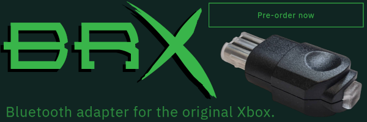

{% include_relative _includes/intro.html %}

Please consult the documentation found on the wiki:
4 - System manager page
Disconnect all controllers from BlueRetro before connecting for update.
{% include output_helper.html %}
{% include_relative _includes/utils.html %}